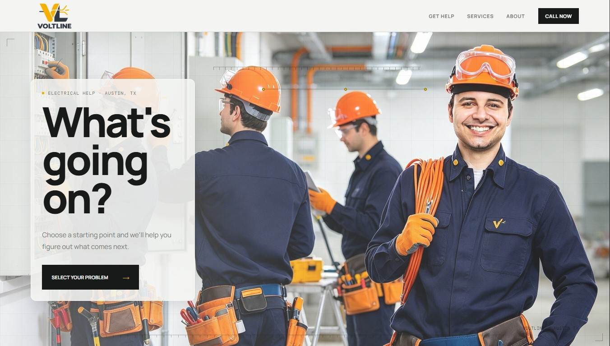
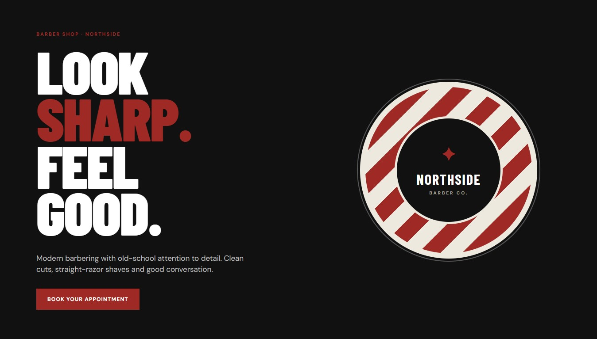
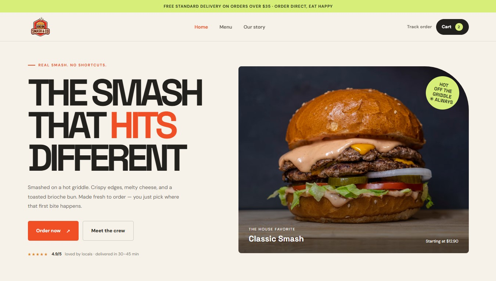

Victor Saraiva Desenvolvimento de software
Sites, aplicações
e APIs em prática.
Este portfólio reúne sites conceituais para negócios fictícios, aplicações frontend e APIs REST. Cada projeto apresenta o que foi construído, as tecnologias utilizadas e os limites do que está funcionando.



01 / Sites conceituais
Experiências web
para negócios fictícios.
Três projetos de site exploram comunicação, navegação e fluxos de uso para marcas criadas como demonstração. Nenhum representa uma empresa ou serviço real.
02 / Software e APIs
Aplicações e serviços
com escopo definido.
Projetos de frontend e backend demonstram gerenciamento de estado, validação, integração HTTP, documentação de API e testes automatizados.
Sobre este portfólio
Sites de demonstração e projetos de software, sem misturar seus limites.
Os sites conceituais usam negócios fictícios. As aplicações e APIs descrevem os recursos realmente implementados, incluindo quando os dados ficam apenas no navegador, em memória ou vêm de um serviço externo.
Consultar escopo e tecnologiasContato
Quer conversar sobre um projeto ou uma oportunidade?
Posso compartilhar mais contexto sobre os sites conceituais, as aplicações frontend e as APIs deste portfólio.
Ir para contato